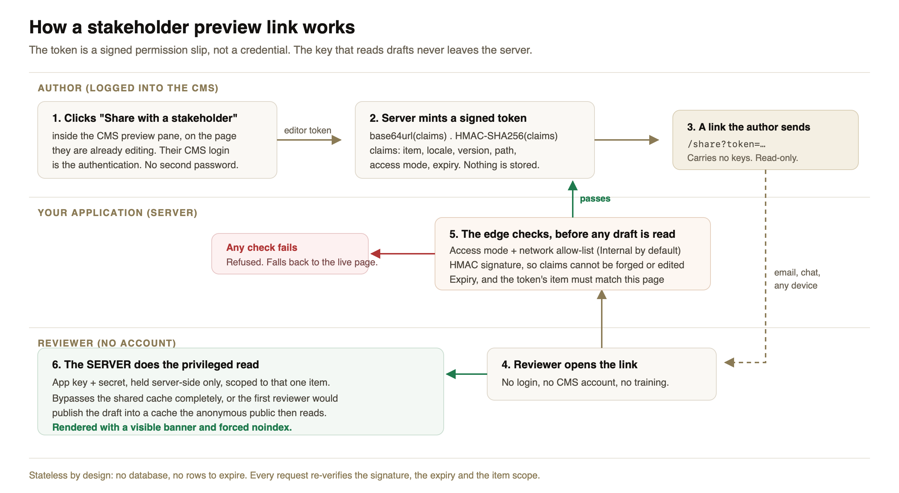

Letting someone outside the CMS review a page before it goes live sounds like a setting you switch on. It is not one. Optimizely SaaS does not ship this out of the box, and on a headless build you have to develop it yourself. It is a small feature with a fair amount going on underneath, and it matters more to the business than its size suggests.
Here is how it works, what caught me out, and the decisions worth making early.
A few weeks before go-live, someone always asks:
"Can you send the client a link so they can see the page before we publish it?"
The reviewer is usually a legal contact, a brand manager, or a client sponsor. They will not get a CMS account, they will not be trained, and they will open the link on their phone.
Optimizely SaaS already gives you a preview: the CMS shows your site in a frame while the author edits, updating as they type. It is genuinely good, and it is for the author.
It is also tied to that editing session, so you cannot paste that URL into an email on Tuesday and expect it to work on Thursday.
| Editor preview | Stakeholder link | |
|---|---|---|
| Who is it for? | The author, while editing | A reviewer with no account |
| How long does it last? | Minutes | Days, you decide |
| Comes with the CMS? | Yes | No, you build it |
This is the part that surprises people, so it is worth being direct about it. The editor preview is included. A durable, login-free link for someone with no CMS account is not, and no amount of looking through the settings will find it. It is custom development, and you should scope it as such.
The reason is architectural rather than an oversight. In a traditional CMS the server renders the page, so it can render the draft too. Go headless and your app does the rendering. Nothing shows a draft unless you write the code that asks for one.
There is also a credential problem. Optimizely Graph gives you two keys:
Only the second can see a draft, and you really do not want it in a browser. So the actual request is "let this reviewer see this one draft, without any powerful key leaving my server".

The author clicks a button. Your server creates a signed link. The reviewer opens it, your server checks the link is genuine, and then your server (not the browser) fetches the draft and renders it.
The key idea: the link is a permission slip, not a key. It says "show the bearer this one page, until this time". It contains no credentials. The key that reads drafts stays on your server and never travels.
Because the link is signed, nobody can edit the URL to reach a different page or extend the expiry. Anyone can read what it says, which is fine, but nobody can change it.
There is no database behind any of this either. Nothing is stored, so there is nothing to clean up. The one honest downside: you cannot cancel a single link early. You lean on short expiry dates instead, and if you ever need to kill every link at once, you change the signing secret.
The realistic risk here is not an attacker. It is an email forwarded one hop too far.
So links are Internal by default: they only open from the office or the VPN. Shareable (opens from anywhere) is a deliberate choice, made per link, for a genuine external reviewer.
That one default has saved more trouble than any of the clever parts.
The newest draft is not the highest version number. I sorted versions and took the highest. The preview loaded, the banner appeared, everything looked right. It was showing the published page, because the draft happened to carry a lower number. Sort by status, not by number.
The lesson is bigger than the bug: test for a difference, not for a page load. Make an edit, then check the preview shows it and the live page does not. A preview quietly showing published content passes every other test you would think to write.
Turning on preview mode unlocked everything. Most frameworks have a "this visitor can see drafts" switch. I turned it on, browsed to another page, and saw that draft too. One link had opened the whole site. The switch has no idea which page the link was for, so you have to carry that yourself and check it on every request.
The cache nearly published a draft for me. Caching pages by URL is right for published content and dangerous for a draft: the first reviewer loads it, it lands in a shared cache, and the public gets served an unpublished page. Draft reads have to skip the shared cache completely.
Everything above makes the link work. What I underestimated was making it easy to get.
My first version was a small admin page with a shared password. It worked, and it was still wrong. Asking authors to keep a password is a smell, and asking them to leave the CMS to find the page they were already looking at is a workflow nobody uses twice.
The better answer was already on screen. The CMS shows your app inside its preview pane, so that frame is your interface, inside their CMS, on the exact page they are editing. Put the button there. Their CMS login is the authentication, so there is no second password to hand out.
The measure is not "can we produce a link". It is "does the author reach for it instead of messaging a developer".
We now treat this as part of delivering an Optimizely solution, not as an optional extra a client might ask for later. It goes into the plan at the start, and it is built and tested before the site is handed over.
That is a deliberate choice, and the reasoning is simple. Every organisation has someone who has to see a page before it goes live: a legal reviewer, a compliance team, a brand owner, an agency client, a director who wants a look on their phone before Monday. If there is no clean way to show them, the team invents a messy one. Screenshots pasted into email. A staging site with a shared password. Publishing the page quietly and hoping nobody notices, then unpublishing it. Or, most commonly, the whole approval step just moves into a meeting.
None of those are good, and all of them are slower than a link.
Retrofitting it later is also more expensive than it looks, because the decisions it depends on (caching, indexing, where credentials live, how authors reach the feature) get baked in during the main build. Doing it at the end means unpicking some of them.
So it is a small feature that quietly removes a recurring source of friction from the publishing process, and it costs a few days if you plan for it. That is an easy trade to recommend to a client, and a harder conversation to have six months after go-live.
The build takes a few days. These questions outlast it, and they are far easier to answer now than later:
A few guardrails are cheap now and awkward later: force noindex on anything showing a draft, keep the link read-only so a reviewer can never trigger a publish, fall back to the live page if anything fails rather than showing an error, and refuse to work at all if the configuration is missing.
"Can you just send them a link" turns into a feature that touches authentication, caching, localization, search indexing and publishing policy. Yet it leaves almost nothing behind: no table of links, no cleanup job, nothing to keep in sync.
A link is a signed sentence saying "show this one draft, to someone on this network, until this time", checked honestly on every request until the clock runs out.
Get the defaults right, keep the real key on the server, and it stays a small, well-behaved feature rather than a liability. Plan it in from the start, and nobody ever has to ask you for it.
I would be glad to hear how other teams handle cancelling links early, and tracking who created them, when the reviewers sit outside your organisation.